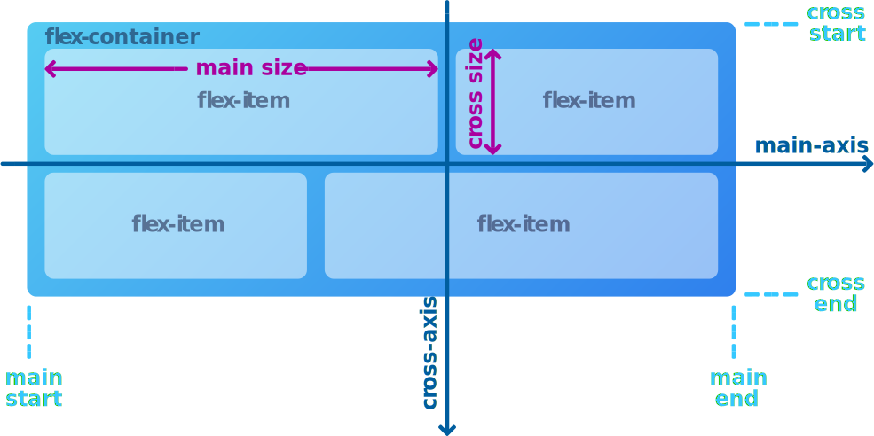

Немного про Flexbox
Flexbox предназначен для предоставления более эффективного способа компоновки, выравнивания и распределения пространства между элементами в контейнере, даже если их размер неизвестен и/или динамичен (отсюда и слово «flex»).
Основная идея гибкого макета состоит в том, чтобы дать контейнеру возможность изменять ширину/высоту (и порядок) своих элементов, чтобы наилучшим образом заполнить доступное пространство (в основном, чтобы контент сайта размещался правильно на всех типах устройств и на всех размерах экрана). Гибкий контейнер расширяет элементы, чтобы заполнить доступное свободное пространство, или сжимает их, чтобы предотвратить переполнение.
Самое главное, Flexbox не зависит от направления, в отличие от обычных макетов (блок, который располагается по вертикали, и блок "inline", который располагается по горизонтали). Им не хватает гибкости для поддержки больших или сложных Web-сайтов (особенно когда речь идет об изменении ориентации, изменении размера и т. д.).
Примечание: Flexbox наиболее подходит для компоновки элементов в готовой разметке или в мелкомасштабных макетах, тогда как технология Grid предназначена для создания более крупномасштабных макетов. Эти технологии можно объединять: создавать разметку страницу с помощью технологии Grid и размещать элементы внутри разметки с помощью технологии Flexbox.
Основы и термины
Поскольку Flexbox — это целый модуль, а не отдельное свойство, он включает в себя множество инструментов, включая набор свойств. Некоторые из свойств предназначены для настройки контейнера (родительский элемент, известный как «гибкий контейнер»), тогда как другие свойства предназначены для настройки дочерних элементов (так называемые «гибкие элементы»).
Поток — способ, которым элементы страницы располагаются на Web-странице. Если «обычная» компоновка основана на блочном (вертикальном) и инлайн (горизонтальном) направлениях потока, то «гибкая» компоновка основана на «гибких направлениях потока». Взгляните на схему ниже и рассмотрите основную идею гибкого макета.
Элементы будут располагаться либо по главной оси (от начала до конца), либо по поперечной оси (от начала до конца).
main axis— главная ось flex-контейнера. Это основная ось, вдоль которой располагаются flex-элементы. Осторожно, это не обязательно горизонтально; это зависит от свойства flex-direction (см. flex-direction).main-start | main-end– flex-элементы размещаются внутри контейнера, начиная с main-start и заканчивая main-end.main size– ширина или высота flex-элемента (в зависимости от того, какая ось является основной), является основным размером flex-элемента.cross axis– ось, перпендикулярная основной оси, называется поперечной осью. Её направление зависит от направления основной оси.cross-start | cross-end– flex-строки заполняются элементами и помещаются в контейнер, начиная с начала поперечной оси flex-контейнера и двигаясь к концу поперечной оси.cross size– ширина или высота flex-элемента (в зависимости от того, какая ось является поперечной), является поперечным размером flex-элемента.